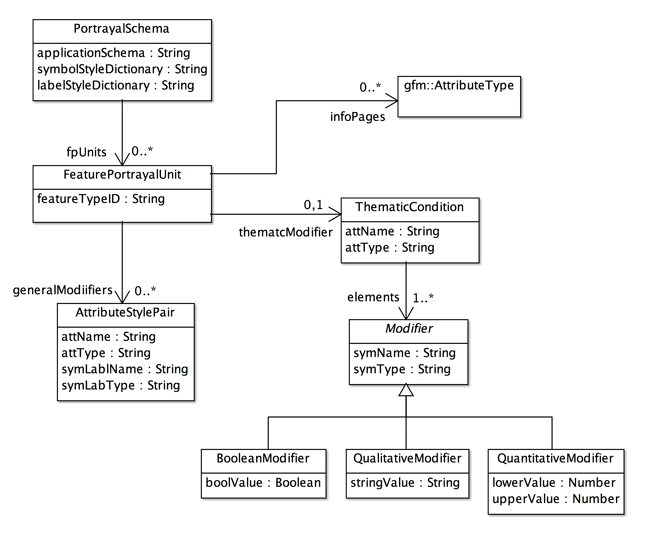
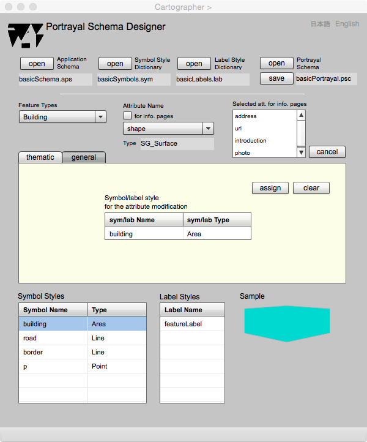

Portrayal Schema Designer
Introduction
The relationship between symbol or label style and an attribute of a feature is required to draw a graphic object on a map. Such a relationship is registered in a portrayal schema and it enables automatical drawing of maps by gittok. The users can design portrayal schema by using Portrayal Schema Designer.
The user should understand about portrayal schema beforehand. This page explains what is a portrayal schema , and how to use Portrayal Schema Designer.
Portrayal Schema
Portrayal schema is a schema to specify a collection of relationships between drawing styles and feature attributes.The class diagram below is a structure of portrayal schema that is called General Portrayal Model (GPM) in gittok. The relationship between portrayal schema and GPM is similar to the relatioship between application schema and GFM.

Figure 1. Class diagram of General Portrayal Model (GPM).
CLASSES
PortrayalSchema
This class is the root class of the portrayal schema.This class has names of application schema, symbol style dictionary, and label style dictionary. This class also has an association to a collection of feature portrayal pairs, which roll name is fpPairs.
FeaturePortrayalPair
This class represents a combination of a feature and its modifiers. GeneralModifier is a modifier to present a feature in general-purpose maps. ThematicModifier is a modifier to present ranks of given modifier values in choropleth maps. Modifier is information to translate attributes into graphics on maps.
AttributeStylePair
This class keeps a combination of an attribute type (its name and data type) and symbol or label style (its name and style). This is used to specify which style is selected to draw a feature attribute.
ThematicCondition
This class is used to draw a chpropleth map. It has feature attribute name and data type as attName and attType. It associates with a collection of modifiers. If the attribute data type is Boolean, then boolean modifiers to show true, false and null will be elements. If the attribute data type is character string, the qualitative modifiers to show each string will be included in elements. If the attribute data type is number, the quantitative modifier to show ranks of data collection units will be included in elements.
Modifier
This is an abstract class and the children, BooleanModifier, QualitativeModifier and QunatitativeModifier are used as modifiers of feature attributes. It keeps a feature attribute name and its data type. Thus all children classes have these parameters.
BooleanModifier
A modifier for Boolean values (true, false, or null). It has Boolean value (boolValue), symbol name (symName) and symbol type (symType) as attributes.
QualitativeModifier
A modifier for character strings. It has a string (stringValue), symbol name (symName) and symbol type (symType) as attributes.
QuantitativeModifier
A modifier for numbers. It has an value extent (lowerValue and upperValue), symbol name (symName) and symbol type (symType) as attributes. Symbol is represented if the attribute value is inside of the extent.
gfm:AttributeType
A feature attribute type for representation on the information page.
ROLL NAMES
fpUnits
A collection of feature portrayal units for visualization of features.
generalModifiers
A collection of general-purpose modifiers specifying the visualization of featues by symbols.
thematicModifiers
A collection of thematic modifiers specifying the visualization of ranks by symbols for choropleth mapping.
infoPages
A collection of attribute types for visualization of information pages. Attribute name and type indicate which information page is visualized.
Portrayal Schema Designer
Open and save of portrayal schema files.
See Figure 2.
FIELDS
Application Schema
A file name of the kit is displayed in this field.
Symbol Style Dictionary
A file name of the symbol style dictionary is displayed in this field.
Label Style Dictionary
A file name of the label style dictionary is displayed in this field.
Portrayal Schema
A file name of the portrayal schema is displayed in this field. The portrayal schema is saved after assignments of feature portrayal units (fpUnits). And it is opened for editing. A name of the portrayal schema appears in this field when save and open occur.
BUTTONS
open (Application Schema)
The application schema is opened.
open (Symbol Style Schema)
The symbol style schema is opened.
open (Label StyleSchema)
The label style schema is opened.
open (Portrayal Schema)
The portrayal schema is opened.
save
The portrayal schema is saved.
日本語
今あなたが読んでいるドキュメントが表示されます．
English
You can read the tutorial written in English
Modification for General-purpose Maps
General-reference map is used to emphasize the location of spatial phenomena (Slocum et al., 2005 ). It portrays phenomena on the earth for general purpose. Typical examples are national base maps published by national mapping agencies.
The figure shown under is a page for portrayal schema design, and the tab at the middle part is selected 'general'. This means the box under the tab is provided for the portrayal of general-purpose use. Here, the association between feature attribute and symbol or label style for attribute modification.

Figure 2. Page for portrayal schema design of features for general purpose.
FIELDS
Feature Types (editable)
Feature type list for the selection of a feature to be portrayed. The selection is possible on this drop down list.
Attribute Name (editable)
Attribute type list for the selection of a feature attribute to be portrayed. The selection is possible on this drop down list.
Type
The data type of selected attribute.
Symbol/label style for the attribute modification
Symbol or label style that is assigned by the selection of the symbol or label in the lists located under the box.
Symbol styles
Symbol style list for the selection of the symbol style associating a feature attribute. The sample is drown at the right hand side.
Label styles
Label style list for the selection of the label style associating a feature attribute. The sample is drawn at the right hand side.
Sample
A sample of symbol or label style is drawn at this area．
BUTTONS
general
This tab is selected for the general-purpose feature modification.
assign
The style selected in the symbol or label style lists is signed as a modifier of the attribute．
clear
The style assigned as a modifier is released.
Modification for Choropleth Maps
Thematic maps (or statistical maps) are used to emphasize the spatial pattern of one or more geographic attributes (or variables), such as population density, familiy income, and daily temparature maximums (Slocum et al., 2005 ).
In other words, choropleth map is a map focusing on the spatial pattern of geographic attributes such as population density, family income, and maximum temperature of each day. it is drawn by paying attention to ranks of the attribute values.
Figure 3. Page for portrayal schema design of features for choropleth mapping.
FIELDS
Feature Types (editable)
Feature type list for the selection of a feature to be portrayed. The selection is possible on this drop down list.
Attribute Name (editable)
Attribute type list for the selection of a feature attribute to be portrayed. The selection is possible on this drop down list.
Type (geometric attribute)
The data type of selected geometric attribute.
Modifier (editable)
The name of attribute to use as a thematic modifier for the geometric attribute.
Type (thematic attribute)
The data type of selected thematic attribute.
BUTTONS
thematic
This tab is selected for the thematic modification.
assign
The style selected in the symbol or label style lists is signed as a modifier of the attribute．
clear
The style assigned as a modifier is released.
Selection of thematic attributes shown on the information pages
Map is mainly a graphic representation of geometric attributes and text string attributes of features. However, gittok provides pages to show multimedia information, because features have multimedia attributes such as image and movie. Gittok enables the selection of attributes that are presented on the appropriate information pages according to their characteristics.
Thematic attribute is shown on the information page is possible by selection of a feature, check 'for info. page' button, and selection of a thematic attribute by the dropdown list. Selected thematic attributes are added in the list at the right hand side.

Figure 4. Thematic attribute selection for the representation by information pages.
FIELDS
Feature Types (editable)
Feature type list for the selection of a feature to be portrayed on the information page. The selection is possible on this drop down list.
Attribute Name (editable)
Attribute type list for the selection of a feature attribute to be portrayed on the information pages. The selection is possible on this drop down list.
Selected att. for info. pages
Selected attributes to show information pages are listed on this list.
BUTTONS
for info. pages
If you check this check box, the attribute displayed on the information page is listed.
cancel
If you check this check box, the attribute displayed on the information page is listed. The display of the attribute on the information page is released if this button is clicked after the selection of the attribute on shown on the list.
References
Slocum, T. A., McMaster, R. B., Kessler, F. C,. Howard, H. H, (2003). Thematic Cartography and Geographic Visualization. Pearson Education, Inc., p.2